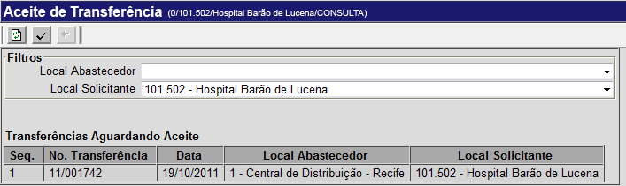

Aceite de Transferência [ Voltar ]Utilize esta tela para localizar e realizar aceites de transferências. O formulário "Aceite de transferência" encontra-se dentro do menu "Transferência". 
Ao clicar no formulário, o sistema exibirá a seguinte tela: 
Siga os passos abaixo para localizar a transferência para a qual deseja realizar o aceite: 1º Passo: selecione os locais abastecedor e solicitante. Informe nos campos "Local Abastecedor" e "Local Solicitante" os locais associados à transferência desejada. 2° Passo: clique no botão 3° Passo: quando localizar a transferência do aceite, selecione-a com um clique. Ao selecionar uma transferência, a tela "Fazer transferência" será aberta para conferência.
4° Passo: clique no botão Após processado o aceite, clique no botão  para visualizar a tela de impressão do relatório de aceite.
para visualizar a tela de impressão do relatório de aceite.
|

 para concluir o
aceite.
para concluir o
aceite.